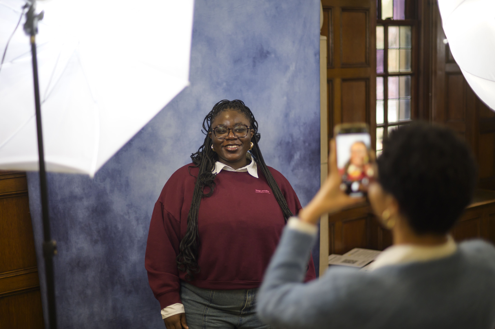

Craft a Resume that Tells Your Story

Your resume is often your first impression—an opportunity to highlight your unique strengths, skills, and
experiences to potential employers.
Whether you’re starting from scratch or looking to polish an existing resume, these resources are here to help
you every step of the way.
UMSI students are in high demand, and a clear, well-organized resume will help you stand out among applicants.
On this page, you'll find
practical tips, templates, and guides—all tailored to the needs of School of Information students and aligned
with employer expectations.
Need feedback? You can always meet with a CDO Career Coach to review your materials.
Resume Writing Made Easy: Steps to Success
Jobs:
Include part-time or full-time positions where you gained relevant skills.Internships:
List internships that offered hands-on experience in your field.Volunteer Roles:
Highlight volunteer experiences that align with your mission.Coursework:
Mention specific classes that provided relevant knowledge.Projects:
Describe projects that demonstrate your skills or initiative.- Leadership: Led, Coordinated, Directed, Oversaw, Managed
- Communication: Presented, Wrote, Facilitated, Advised, Collaborated
- Technical Skills: Developed, Coded, Engineered, Designed, Analyzed
- Problem Solving: Resolved, Improved, Streamlined, Optimized, Diagnosed
- Research/Analysis: Investigated, Evaluated, Assessed, Compiled, Modeled
Download a UMSI-Approved Template:
Start with a format that works—no need to design from scratch.
Step 1: Gather Your Experiences
List jobs, internships, volunteer roles, coursework, and projects most relevant to your goals:
Example: Marketing Assistant at XYZ Corp - Managed social media campaigns and analyzed customer engagement data.
Example: Software Engineering Intern at ABC Tech - Contributed to mobile app development using React Native.
Example: Volunteer ESL Tutor - Provided weekly English lessons to non-native speakers, improving communication skills.
Example: "Data Structures & Algorithms" - Built a foundation in efficient coding and problem-solving.
Example: Capstone Project - Developed a predictive analytics tool using Python and machine learning.
Step 2: Write Impactful Bullets
Use action verbs and highlight your skills, results, and unique contributions:
For Example:
Employers love measurable outcomes—ask yourself: What changed because of what I did?
Example:
Led a team of 4 to develop a social media strategy that increased follower growth by 30% in 3 months.
Step 3: Tailor for Each Opportunity
Customize your resume for every job or internship you pursue.
Applying to more than one job?
Try this resource that uses AI to tailor your resume to job descriptions.
Step 4: Review and Edit:
Proofread for errors, check formatting, and ask for feedback from peers or a career coach.
Resume Resources
-
UMSI Resume Guide and Rubric
Comprehensive UMSI guide including tips, formatting rules, and sample accomplishments. -
Writing Effective Resume Bullets
Learn how to describe your work and impact in ways employers notice. -
Resume Rubric
Evaluate your resume using the same criteria as UMSI’s Career Development Office. -
Application Materials: Workshops and More
Attend a Resume Refresh workshop, review video tutorials, or access additional templates.
Ready for review? Book a resume review appointment with a CDO Career Coach.
Resume Examples
Need hep visualizing a resume for your major?
Look below at student example resumes for different industries:


Resume FAQ
-
How long should my resume be?
For most UMSI students and new grads, one page is best. More experienced professionals may require two pages.
-
Do I need a different resume for each application?
It’s wise to tailor your resume to the requirements and keywords of each opportunity.
-
Is it okay to include coursework or student projects?
Absolutely! UMSI coursework and projects are valued by employers, especially if they show relevant skills and impact.
-
How often should I update my resume?
Update your resume every semester, after major projects, or whenever you gain a new role or responsibility.